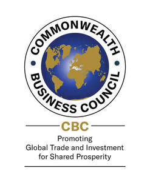

Trade Mark Journal No.2025/015 11 April 2025
UK00004177330 21 March 2025 (35,36,41)

- Class 35
- Chamber of commerce services for the promotion of businesses; Business strategy development services; Advisory services (Business -) relating to the management of businesses; Economic information services for business purposes; Organisation of exhibitions for business or commerce; Promoting the goods and services of others via a global computer network; Providing business information directory services, via a global computer network; Business promotion services; Business networking services; Online business networking services; Advisory services relating to business management and business operations; Business strategy services; Business consultancy services relating to the promotion of fund raising campaigns; Providing information about commercial business and commercial information via the global computer network; Business information for enterprises; Chamber of commerce services for the promotion of trade; Trade fairs (Organization of -) for commercial or advertising purposes; Organisation of trade fairs for commercial or advertising purposes; Foreign trade consultancy services; Organization of exhibitions and trade fairs for commercial or advertising purposes.
- Class 36
- Investment business services; Investment of capital (Services for -); Capital investment services.
- Class 41
- Business educational services; Consultation services relating to business education; Educational services relating to business; Education services relating to commerce; Education services relating to conservation of the environment.
Commonwealth Alliance Ltd